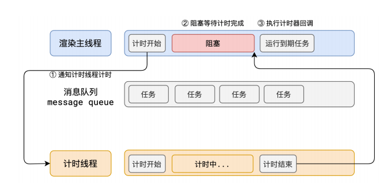
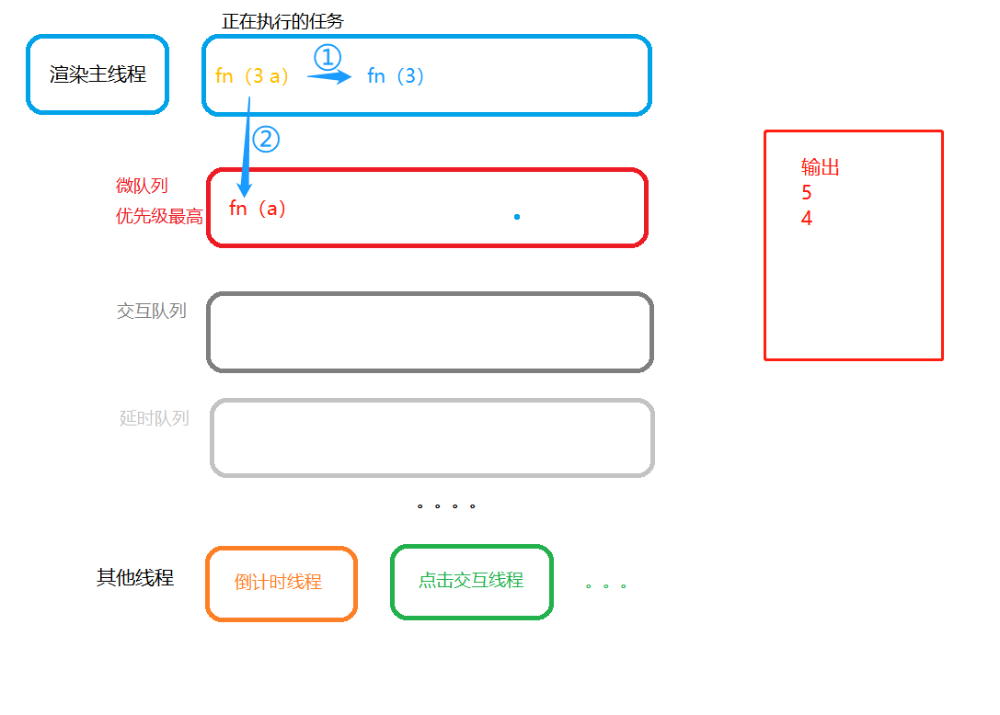
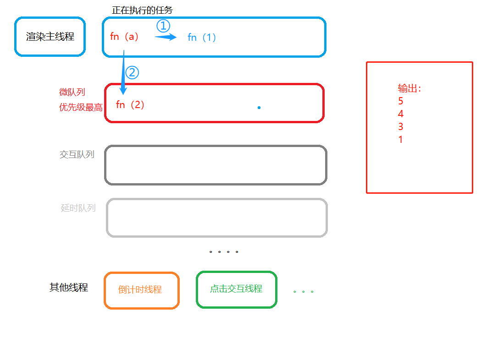

事件循环2-异步
何为异步？
代码在执⾏过程中，会遇到⼀些⽆法⽴即处理的任务，⽐如：
计时完成后需要执⾏的任务 —— setTimeout 、 setInterval
⽹络通信完成后需要执⾏的任务 – XHR 、 Fetch
⽤户操作后需要执⾏的任务 – addEventListener
如果让渲染主线程等待这些任务的时机达到，就会导致主线程⻓期处于「阻塞」的状态，从⽽导致浏览器「卡死」

渲染主线程承担着极其重要的⼯作，⽆论如何都不能阻塞！
因此，浏览器选择异步来解决这个问题

使⽤异步的⽅式，渲染主线程永不阻塞
问：如何理解 JS 的异步？
答：
JS是⼀⻔单线程的语⾔，这是因为它运⾏在浏览器的渲染主线程中，⽽渲染主线程只有⼀个。⽽渲染主线程承担着诸多的⼯作，渲染⻚⾯、执⾏ JS 都在其中运⾏。
如果使⽤同步的⽅式，就极有可能导致主线程产⽣阻塞，从⽽导致消息队列中的很多其他任务⽆法得到执⾏。这样⼀来，⼀⽅⾯会导致繁忙的主线程⽩⽩的消耗时间，另⼀⽅⾯导致⻚⾯⽆法及时更新，给⽤户造成卡死现象。
所以浏览器采⽤异步的⽅式来避免。具体做法是当某些任务发⽣时，⽐如计时器、⽹络、事件监听，主线程将任务交给其他线程去处理，⾃身⽴即结束任务的执⾏，转⽽执⾏后续代码。当其他线程完成时，将事先传递的回调函数包装成任务，加⼊到消息队列的末尾排队，等待主线程调度执⾏。在这种异步模式下，浏览器永不阻塞，从⽽最⼤限度的保证了单线程的流畅运⾏。
案例：

运行结果： 5 4 3 1 2
解析：
1.主线程全局执行：

执行 fn（5）=》 微队列 fn（4）=》 延时队列fn（3 a）执行如下
主线程执行微队列中的 fn（a）任务
主线程执行上一步微队列中增加的 fn（2）任务 ，输出2，则最终输出为 5 4 3 1 2
事件循环2-异步
http://example.com/2023/04/24/事件循环2-异步/